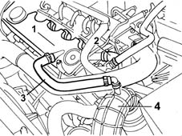

CONSTRUCTION SPECIFICATIONS
- Path
- Descriptions > 10 ENGINE > 1080 EMISSION CONTROL SYSTEM > 1080D CRANKCASE VAPOUR/GAS RECIRCULATION SYSTEM > CONSTRUCTION SPECIFICATIONS
- Kind
- system description
- Applies to
- engines: 2.4 JTD 10V; all production periods
- Interactive page
- https://sloeber94.github.io/elrnDB-lThss/en/#/629695
Applies to: engines: 2.4 JTD 10V; all production periods
The oil vapour emission control is achieved by means of a separator (1) (a function performed by the tappet cover) which collects the vapours released by the crankcase through the pipe (2).
The temperature difference between the separator and the oil vapours causes partial condensation.
The condensed vapours are sent to the crankcase via the pipe (3).
The vapours that are not condensed are sent, via the pipe (4), to the turbocharger air intake hose.
